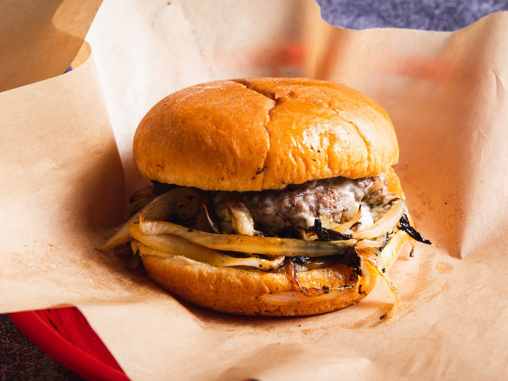

Beefy Oklahoma Onion Burger!

Description:
Onion burgers are one of America's greatest regional renditions, but be warned--these are diner style!
Ingredients:
- Two tablespoons salted butter
- 1 tablespoon olive oil
- 1 large onion, very thinly sliced
- ½ teaspoon granulated garlic
- 1 pound 85% lean ground beef
- ½ teaspoon salt
- 1 teaspoon Hamburger Seasoning
- ½ cup sliced portobello mushrooms
- ground black pepper to taste
- 4 slices Swiss cheese
- 4 rolls rolls, hamburger, white, enriched, plain
Steps:
- Heat a skillet over medium heat. Add butter and oil; heat until butter is melted. Add onion and garlic. Cook until onion is soft and translucent, about 5 minutes.
- Heat a large skillet or flat-top over medium-high heat for a few minutes. Place patties into the hot skillet and smash with a spatula or bacon press. Hold patties down for 30 seconds, then cover each patty with some of the cooked onion. Cook for 2 minutes. Carefully flip burgers, making sure to scrape the browned bits off the skillet.
- Season patties with salt and pepper and place a slice of cheese on each. Cook until burgers have reached the desired doneness, 2 to 4 minutes more. Top each patty with leftover onion and mushrooms and serve on buns.
Nutrion:
Per Serving:569 calories; protein 35.9g; carbohydrates 31.1g; fat 32.8g; cholesterol 122.4mg; sodium 770.4mg.